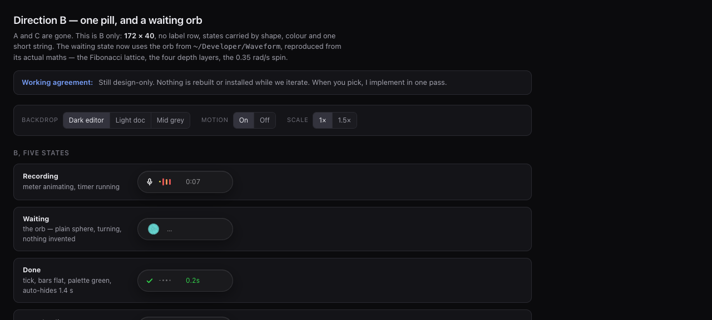
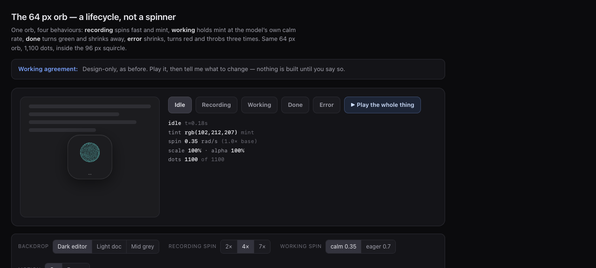
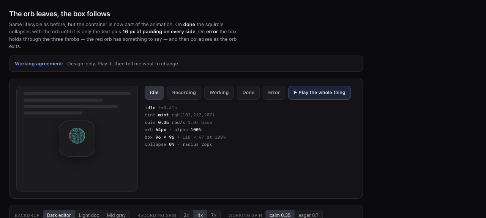

Talk.
It types.
Press ⌥⌘Space, talk, and the text appears at your cursor. Everything runs on your Mac — no network calls, no account, no subscription. The orb listens, transcribes, and pastes.
Sick STT, zero cloud.
Two interchangeable engines, a floating orb that tells you exactly what's happening, and text pasted wherever your cursor is.
100% local
No network calls, no account, no subscription. Your voice never leaves the machine.
Parakeet on the ANE
FluidAudio → CoreML Parakeet Ultra on the Apple Neural Engine. Models stay resident for instant starts.
whisper.cpp fallback
CPU engine with large-v3-turbo. Switchable from the menu, no rebuild needed.
Global hotkey
Carbon hotkey — no Accessibility permission needed just to trigger. Works in any app.
Orb HUD
A 96px squircle that listens, thinks, and confirms. Mint while recording, green on done, red on error.
Paste anywhere
Transcript is dropped straight into the focused app at your cursor.
The orb, in three moods.
Mint and spinning while it listens. Green and collapsing when done. Red and throbbing on error.



Three steps. One hotkey.
Press
⌥⌘Space starts recording. Press again to stop. The orb spins mint.
Transcribe
Parakeet (ANE) or whisper.cpp (CPU) turns speech into text on-device.
Paste
The orb turns green, collapses, and the text lands at your cursor.
Pick your brain.
Switchable live from the menu bar. No rebuild, no restart.
| Engine | Runs on | Notes |
|---|---|---|
| Parakeet (default) ANE | Apple Neural Engine | FluidAudio 0.17.7 · CoreML Parakeet Ultra · models stay resident |
| whisper.cpp | CPU | large-v3-turbo · reloaded per recording · needs brew whisper-cpp |
What you need.
brew install whisper-cpp